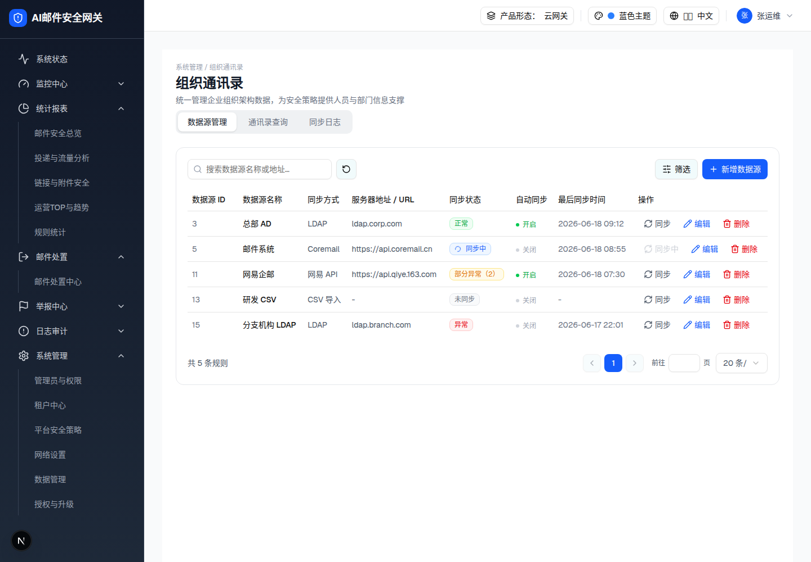
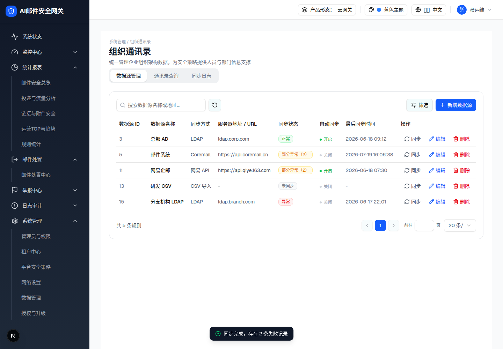

预览可操作：点击任意行「同步」跑状态机。demo 结果随机（55% 正常 / 30% 部分异常 / 15% 异常）；预览确定性重放：「邮件系统」行出部分异常（2）（与捕获一致），其余行出正常。同步中按钮 disabled，Tooltip「该数据源正在同步中，请等待完成」（预览以 title 属性等效呈现）。
| 数据源 ID | 数据源名称 | 同步方式 | 服务器地址 / URL | 同步状态 | 自动同步 | 最后同步时间 | 操作 |
|---|
| 3 | 总部 AD | LDAP | ldap.corp.com | 正常 | | 2026-06-18 09:12 | |
| 5 | 邮件系统 | Coremail | https://api.coremail.cn | 正常 | | 2026-06-18 08:55 | |
| 11 | 网易企邮 | 网易 API | https://api.qiye.163.com | 部分异常（2） | | 2026-06-18 07:30 | |
| 13 | 研发 CSV | CSV 导入 | - | 未同步 | | - | |
| 15 | 分支机构 LDAP | LDAP | ldap.branch.com | 异常 | | 2026-06-17 22:01 | |

同步中实测（邮件系统行）：状态列蓝色「同步中」徽章 + Loader2 旋转；操作列按钮变灰字「同步中」disabled + RefreshCw 旋转

1.5s 后实测：状态变「部分异常（2）」，最后同步时间刷新为当前时间，toast「同步完成，存在 2 条失败记录」
| 状态 | 视觉（浏览器实测） | toast |
|---|
| 同步中 | 状态列蓝徽章「同步中」+ 旋转图标；同步按钮 disabled 灰字「同步中」+ 旋转 RefreshCw + Tooltip | — |
| 正常 | 绿徽章「正常」 | 「同步成功」 |
| 部分异常 | 琥珀徽章「部分异常（2）」（带失败数） | 「同步完成，存在 2 条失败记录」 |
| 异常 | 红徽章「异常」 | 「同步失败：连接异常」 |
| 时间 | 最后同步时间刷新为 nowStamp()（YYYY-MM-DD HH:mm:ss） | — |
DOM 树比对结果
| 比对项 | demo 实际 DOM | 嵌入的 HTML | 是否一致 |
|---|
| 同步中行快照节点数 | 35 | 预览状态机生成的行结构与快照逐节点等构（徽章 class/图标/文案一致） | 一致 |
| 结果行快照节点数 | 33 | 同上 | 一致 |
| toast 结构 | [role=status] 深色底 + CheckCircle2 | 规格侧 toast 等构复刻 | 一致 |
| 结果随机性 | demo Math.random 三分支 | 预览确定性重放（正文已标注） | 一致 |